This repository contains labs for the Istio Hands-On Session. We will be using Google Kubernetes Engine (GKE) for this hands-on but for China participants, you will be using a Microk8s on AWS. You can use Keptn in a box to easily spin up a Istio based K8s instance
Prerequisites
- Google Cloud account with access to GKE. Use ANY of the following:
- Corporate account via #team-gotc on Slack (eg. brandon.neo@dynatrace.com on ACM Workshops APAC project)
- Free trial access here.
- Chrome Browser with browser extension
- Enable Envoy Tracing in your Dynatrace Environment
- Settings > Monitored Technologies > Envoy
What You'll Learn
- Understand Istio / Envoy principles
- Learn Kiali and its difference with Dynatrace
- Deployment strategies and weightage distribution
- How to instrument Envoy in Dynatrace
Login to Google Cloud Platform Account
Either login to your corporate account or signup with Google Cloud Platform free here
You can login to your GCP console here.

Enable Kubernetes Engine API
You will also need to Enable your API Billing with Kubernetes Engine API.

You should be prompted to the billing page while setting up your GKE instance.
If not, you can follow the steps here
Activate Cloud Shell

Click on the Terminal Icon on the top right
A Cloud based Terminal lookalike will appear at the bottom of the page
We will start setting up our GKE Cluster
Download the Istio Hands-on Repo
Run the following command to download from our Github Repo
git clone https://github.com/Nodnarboen/istio-handson.git
The above will create a folder call istio-handson. This will contain the scripts we will use for the remainder of the workshop

Setup your GKE Cluster
Run the command to create the cluster
cd istio-handson/1-CreateCluster; ./setupenv.sh
Go to Deploy Dynatrace > Start Installation > Kubernetes and follow the instructions on screen
Dynatrace Tokens
In order to install OneAgent via Operator, we need to create the API and PaaS Tokens
Get API and PaaS Tokens in Dynatrace
Follow the steps on screen to create your API and PaaS tokens. You will find the API token automatically configured with the necessary permissions. Once created, select the newly created tokens from both of the drop-down fields. Other commands will also be pre-populated with the necessary steps.

Add the OneAgent Helm Repo
Follow the setup steps and run the following commands.
helm repo add dynatrace https://raw.githubusercontent.com/Dynatrace/helm-charts/master/repos/stable
kubectl create namespace dynatrace
Create a and apply values.yaml
Run the below command to create new file called values.yaml
nano values.yaml
Copy and paste in content in your Dyntrace tenant and save the file with Ctrl-X followed by Y and Enter
EXAMPLE
platform: "kubernetes"
oneagent:
name: "oneagent"
apiUrl: "https://mou612.managed-sprint.dynalabs.io/e/<ENVIRONMENT ID>/api"
args:
- --set-app-log-content-access=true
skipCertCheck: false
enableIstio: true
secret:
apiToken: "<API KEY>"
paasToken: "<PAAS KEY>"
Copy the next command to apply the values.yaml and deploy OneAgent on Kubernetes.
helm install dynatrace-oneagent-operator \
dynatrace/dynatrace-oneagent-operator -n\
dynatrace --values values.yaml
If successful, you should get a positive output with STATUS: deployed as per below.
NAME: dynatrace-oneagent-operator
LAST DEPLOYED: Thu Aug 13 01:25:26 2020
NAMESPACE: dynatrace
STATUS: deployed
REVISION: 1
TEST SUITE: None
NOTES:
Thank you for installing dynatrace-oneagent-operator.
Your release is named dynatrace-oneagent-operator.
Istio Installation
Navigate to the directory 2-DeployIstio, where there will be two scripts:
Execute the script ./1-deployIstio.sh

After the script runs, you will be presented with a URL to the Kiali web interface along with the username and password:
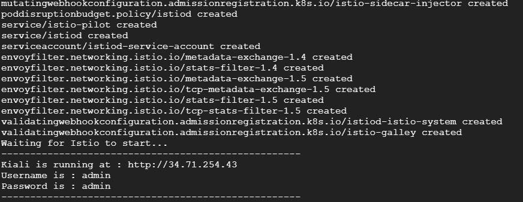
Define Istio Namespace
Now that we have Istio and Kiali installed, we need to tell it which namespaces can use it.
We do this by adding the following label to any namespace where we plan to use Istio: istio-enabled=enabled In our case we are going to label the default namespace by running the script ./2-labelNamespace.sh

Traffic Routing Setup
First let's deploy our application:
Navigate to the folder 3-TrafficRouting and execute the script ./1-trafficroutingapplication.sh
This will deploy our sample application and output the URL where the application can be accessed via a browser
This is plain Kubernetes, nothing Istio related is deployed yet

Once the deployment complete, navigate to the output URL to view the application:
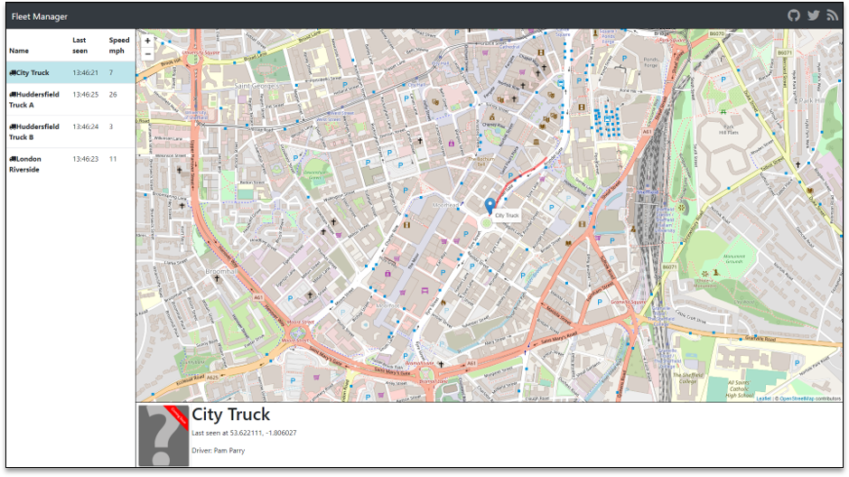
Explore Sample App Fleet
Clicking the different truck names on the left you will notice that the driver picture changes to either a placeholder photo or a real photo
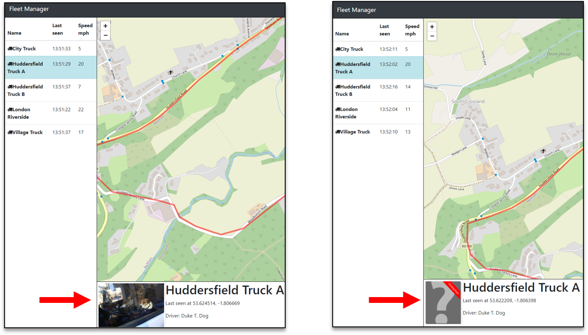
If you take a look at the running pods, you will see that we have two different pods running the staff service

Explore Service Flow in Dynatrace and you should see the below

Explore Kiali
In the Kiali UI, navigate to the Graph view on the left navigation menu.
Find fleetman-staff-service, right-click and select Show Details
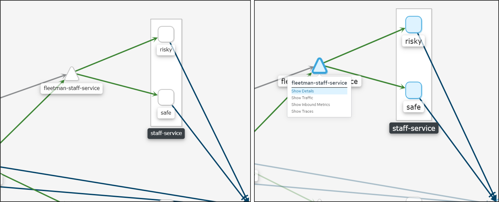
Near the top right, Select Actions and Create Weighted Routing
Set the "Risky" service to 10% Traffic Weight
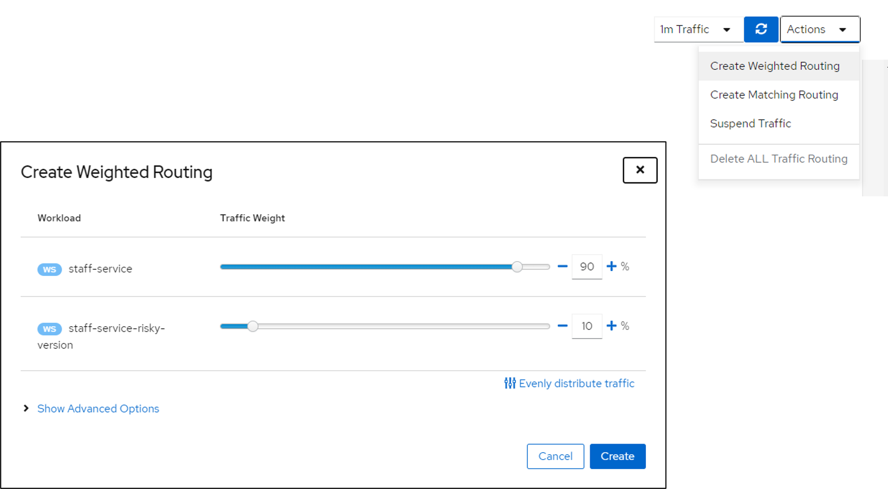
You will now see that a Virtual Service and Destination Rule was create and we can view the YAML
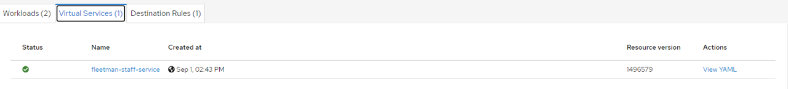
You will also see this in the console via kubectl
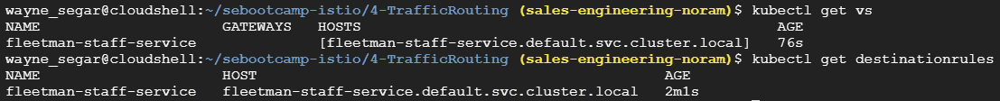
In the UI we should now see the traffic weighting take affect and we should see the actual person image ~10% of the time and the placeholder image ~90% of the time
We can also see in the in the command line via cURL. In the folder 3-TrafficRouting, execute the command ./curlOutput.sh
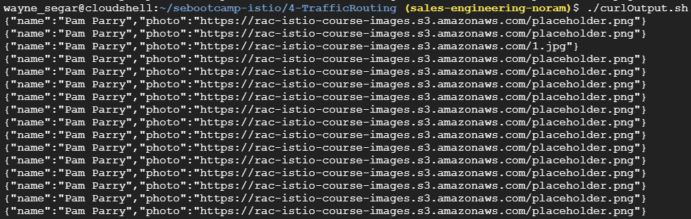
Run the script ./2-cleanUp.sh to remove the application and make sure you deleted the VirtualService and DestinationRules
First let's deploy our application, navigate to the folder 4-Ingress and execute the script ./1-ingressapplication.sh
When the script completes you will end up with URL for the application
There is NO Istio specific configuration for this application (yet)
Blue Green versions of Fleet Manager
You will notice if you refresh the page a few times, there are two different versions of the application:

Since there is no Istio involved, traffic is currently weighted at 50⁄50 We can also see this via cURL, by running the script ./curlOutput.sh in the folder 4-Ingress
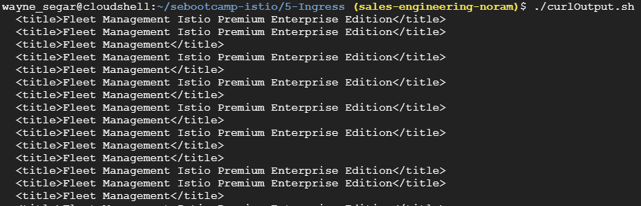
Explore Kiali
Now let's create a traffic weighting so 90% of the traffic goes to the stable version and 10% of the traffic goes to the experimental version in Kiali
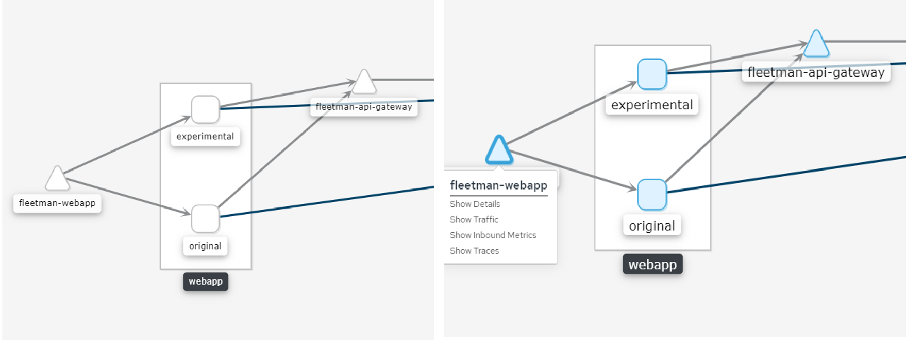

However, when running the cURL script again, we still see a ~50⁄50 traffic weighting?

Istio already provides us with an Ingress Service, we just need to configure it:

Run the script ./2-createIstioGateway.sh in the folder 4-Ingress which will create our Gateway, Virtual Service and Destination Rules.
This will also output the URL for accessing the application through the Gateway

We should now see that we are getting about a 90⁄10 traffic weighting in the browser
If we check Kiali we will also see the Gateway Service created, along with the Virtual Service and Destination Rules

We should also be able to see this in Dynatrace's Service Flow
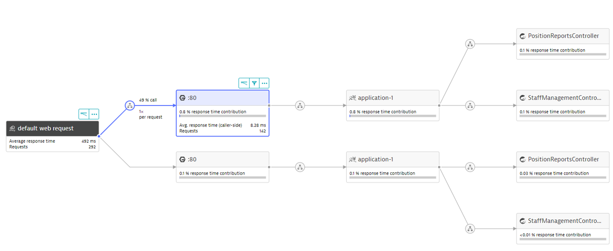
Run the script ./cleanUp.sh to remove the Gateway Service, Virtual Service and Destination Rules The application will remain deployed

What are Dark Releases?
- Deploying a "dormant" version of an application/service
- Control the exposed use base
- Based on Feature Flags, IP Address, Header, URL, etc...
Deploy Dark Releases
Let's deploy our Dark Release configuration:
Navigate to the folder 5-DarkReleases and execute the script ./1-createRoutingRules.sh
When you out the application in the output URL, the application should appear WITHOUT the red banner

If we take a look at the yaml file with the routing rules we see how the traffic is routing:
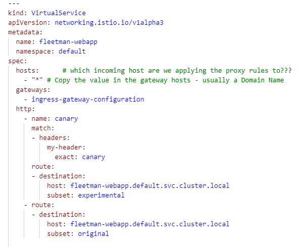
If we access the application with the HTTP Header my-header:canary, we should see the experimental version, with the red banner displayed.
We can add this header via a browser extension:
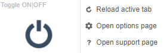
- Selection Open options page
- Click on + Under Add
- Type * for URL
- Type my-header for Header Name
- Type canary for Header Value

We can determine what traffic is canary and which is not in Dynatrace with a Request Attribute:

We hope you enjoyed this lab and found it useful. We would love your feedback!